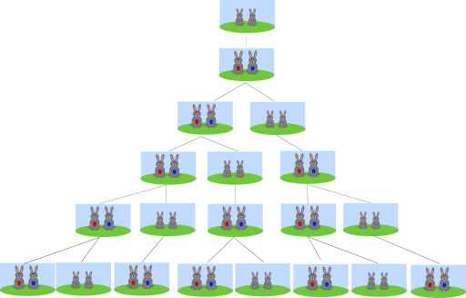

Piłka nożna?
Jak zwykle
strzelasz
?
-
Pewnie większość z was używa strzału
"ze szpica"
Na podwórku
będą się z was śmiali, ale czasami strzał z czuba bardzo się przydaje, ale do tego wrócimy później.
Tak kopią zazwyczaj początkujący.
Po co to trzeba?
Po pierwsze, za pomocątych liczb można stworzyć ładny wzorek :

Po drugie, cała przyroda zna liczby Fibonacciego.
Na przykład zające rozmnażają się w ten sposób. Zobaczcie :

Każda para zajęcy co miesiąc rodzi jedną parę potomków.
Pierwsza para rodzi drugą, druga rodzi następną, gdy pierwsza robi to samo.
I tak dalej.
A teraz pytanie : Ile zajęcy będzie po 15 dniach?
Podpowiedź : Zobacz wyżej do rzędu liczb.